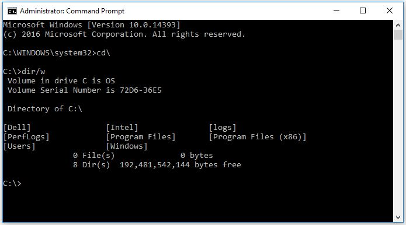

Hacking Tools: The Terminal
How to use the command line
Created by Joshua Nelson with reveal.js
What's a Terminal?
A way to run programs without needing a mouse or desktop
No, not a touchscreen
(Almost) Synonyms
Ask me after if you want to know the difference
- terminal
- shell
- bash
- command prompt
Terminals are on Windows, too!
What can you do with a terminal?
- Find files with a certain name
- Find a specific word in thousands of files
- Debug your network connection
- Compile code without an IDE
- Use git to collaborate with other programmers
- Run programs on a computer without a monitor
- Run multiple programs at the same time
Psst - for the upperclassman
If you already know the first half of the talk, try some challenges at overthewire.org
But first, the basics
Directories, a.k.a. folders

Directory Commands
- pwd - print working directory
- cd - change directory
- ls - list directory
- mkdir - make directory
- rmdir - remove directory
Files
File Commands
- file - what type of file is this?
- cat - concatenate one or more files together
- cp - copy a file
- rm - remove file
- mv - move (or rename) a file
- vim - edit a file (see also emacs)
File permissions
- Read
- Write
- Execute
Executing programs
- Not executable by default
- You can make it executable with
chmod +x <filename> - Runs with the shell you're using
But really, what can I use this for?
SSH!
Great for doing homework on the lab machines from home
ssh -p 222 jynelson@129.252.130.195(but use your own username)
Doesn't work if you're not on the University Wifi - You need to be on the VPN in that case.
Misc Commands
- echo - write some text to the terminal
- man - get help about a command
- apropos - search for a command if you don't know the name
- help - get help about commands that 'man' doesn't know about
- history - show commands you've typed in the past
Questions?
Shortcuts
- tab to autocomplete (when unambiguous)
- tab twice to show options
- up arrow to run previous command
- Ctrl+R to search through your history
!$- the last argument to the previous command- More readline bindings
- More history expansion (things starting with '!')